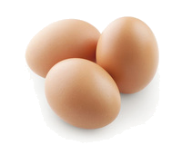

O Grupo
Já parou para pensar quantos alimentos são desperdiçados no mundo? De cada 3 kg de alimentos produzidos no mundo, pelo menos 1kg é jogado fora.Vai para o lixo todos os anos 1,3 bilhão de toneladas de comida que poderia ajudar a alimentar 795 milhões de pessoas que passam fome.
De acordo com o diretor do Programa Mundial de Alimentos (PMA) da Organização das Nações Unidas (ONU), Daniel Balaban, desperdício pode ser reduzido com mudanças culturais e de hábitos do cotidiano. “Tem muitas famílias pobres que desperdiçam alimentos. Acabam comprando mais do que precisam, cozinhando mais do que iram consumir.”- diz Diretor.
E se você pudesse estender a durabilidade de seus alimentos, com o intuito de ganhar tempo para consumi-los?
Nesse viés, nós do grupo PRODES, de acordo com o objetivo de número 12 (Consumo e Produção Responsáveis) da ONU, Tomamos a nossa iniciativa, a fim de reduzir o desperdício de alimentos. Desenvolvemos algumas dicas para conservação melhor e duradoura dos alimentos, em especial, os que precisam de refrigeração.Conservação
| Alimentos | Temperatura adequada |
 Frutas |
Parte menos refrigerada. Na gaveta da geladeira. |
Verduras e Legumes |
Parte inferior da geladeira, pois é menos frio.
Porque temperaturas altas queimam as verduras e legumes mais frágeis. |
 Carne Vermelha |
-15° da geladeira, no caso, o congelador. |
 Ovos |
Onde a temperatura é constante, no caso, na porta da geladeira. |
Laticínios |
Na parte superior da geladeira. Temperaturas mais altas. |
Bebidas |
Devem estar entre 4°C e 8°C da geladeira. Nas prateleiras da geladeira. |
Carnes
Fique atento pois as carnes não duram muito tempo na geladeira, é melhor congelá-las. Cruas ou temperadas, elas tem durabilidade de até 3 dias na geladeira. Se optar por congelar a carne, o ideal é fazer com ela ainda crua, e após o cozimento você ainda pode mantê-la no congelador por mais algum tempo. A carne quando armazenada na temperatura -15°c congela seus nutrientes, o que ajuda na conservação da mesma.
Ovos
Há uma certa polêmica sobre o armazenamento dos ovos. Há quem acredite que eles devem ser mantidos na geladeira e outros que dizem que o ideal é deixar em temperatura ambiente. Se você é do time que guarda o ovo na geladeira, fique sabendo que os ovos inteiros duram em média 10 dias. E se você precisar guardar apenas a clara ou a gema, saiba que assim ela durará apenas 5 dias. Lembre-se sempre de armazená-los fora da embalagem, ela pode conter impurezas. Ovos guardados na geladeira é o método mais recomendado. Isso porque as baixas temperaturas dentro da geladeira impedem a proliferação de bactérias — tal como a salmonela —, impedindo uma possível intoxicação alimentar. Porém, se o ovo estiver fora da geladeira, em temperatura ambiente, as chances das bactérias se multiplicarem são maiores.
Legumes e verduras
Primeiro é preciso que coloque as verduras e legumes nas prateleiras apropriadas. Mantenha-os em sacos plásticos, guardados nas gavetas, na parte mais baixa da geladeira. Quanto às folhas, você pode lavá-las e armazená-las em potes de vidro que assim, elas irão se manter sempre frescas. O tempo médio de durabilidade dos legumes e verduras é até 5 dias, quando crus. Se os legumes forem cozidos, duram apenas 3 dias. Fique de olho! Para livrar esses alimentos de micro-organismos e bactérias sem perder valor nutricional, invista na combinação água + hipoclorito de sódio ou bicarbonato de sódio. Imerja as frutas e as verduras nessa mistura e deixe-as descansando, completamente submersas, por cerca de 10 minutos. Após o processo, certifique-se de que todas estejam 100% secas antes de guardá-las na geladeira. Separe as frutas que emitem etileno das que não produzem esse gás.
Todas as frutas e vegetais emitem um gás natural, sem odor e inofensivo chamado de etileno. O etileno, quando em contato com outros alimentos que produzem esse gás em menor quantidade, pode acelerar o processo de amadurecimento desses produtos.
Algumas frutas e vegetais são grandes emissoras de etileno e, por isso, devem ficar longe dos produtos que são considerados sensíveis a esse tipo de gás. Os maiores produtores de etileno da sua cozinha são:
- Abacate;
- Abacaxi;
- Banana;
- Figos;
- Maçã;
- Mamão;
- Manga;
- Melão;
- Pera;
- Pimentão;
- Tomate;
- Uvas.
Deixe esses alimentos guardados em um lugar bem distante de produtos como batatas, folhas, cenouras, aspargos, brócolis, pepino e outros que podem estragar com facilidade.
Atente-se aos produtos que se adaptam à temperatura da geladeira.
Alguns alimentos adoram ficar armazenados em temperaturas mais baixas, como as que encontramos na geladeira. Esse cuidado ajuda a aumentar seu tempo de validade, além de manter seu valor nutricional.
Os principais alimentos frescos que devem ir para sua geladeira são:
- Abacates maduros;
- Abacaxis maduros;
- Aspargos em sacos plásticos;
- Cenouras e abobrinhas em recipientes fechados;
- Folhas frescas (em recipientes fechados e cobertos com papel toalha para não queimar);
- Mangas maduras;
- Melancias maduras;
- Melão cortado;
- Morangos;
- Pêssegos maduros.
Priorize sempre guardá-las no gavetão, onde a temperatura é um pouco mais alta e que pode evitar danificar os produtos. Deixe na fruteira produtos que gostam de locais frescos e arejados.
A fruteira é uma boa aquisição para quem pretende ter mais espaço para guardar frutas e verduras em casa. A grande maioria desses alimentos precisa de um local arejado e fresco para aguardar seu consumo. Coloque na sua fruteira: As maçãs junto com as peras; As bananas em uma área separada; Tomates, pimentões e pepinos; Frutas cítricas com casca na parte mais arejada; Cebolas e alhos na parte com menor incidência de luz; Batatas também em uma parte com menor incidência de luz (separadas das cebolas). Guarde suas ervas frescas com a ajuda de um copo d’água
Para quem gosta de comprar ervas frescas para sempre usar em casa, uma boa solução para aumentar seu tempo de validade é colocá-las como um buquê em um copo com um pouco de água. Corte as pontas do caule na transversal para facilitar a entrada da água para hidratação e posicione no copo com as folhas viradas para o lado de fora do recipiente. Além de trocar a água diariamente, proteja as plantas envolvendo-as com um plástico, para garantir um pouco de umidade na região. Elas podem chegar a durar até 15 dias com esse cuidado.
Frutas
De preferência, mantenha apenas as frutas maduras na geladeira. É importante retirar as frutas dos sacos plásticos e acomodar-las em um recipiente em que elas consigam “respirar”, como uma cesta. Uma dica essencial é nunca manter frutas descascadas ou cortadas na geladeira, assim elas perdem o seu valor nutritivo. Elas duram em média 5 dias! Junto com a verdura.
Laticínios
O leite e os derivados dele devem ser mantidos na parte mais alta da geladeira. O leite aberto não deve ser colocado na porta da geladeira, pois é um local de muita variação de temperatura, portanto mantendo o seu leite dentro da geladeira, ele irá sem manter fresco por cerca de 3 a 4 dias. Os queijos já não seguem a mesma regra, pois dependem muito do tipo. Dependendo, eles pode ficar de 5 dias até 1 mês na geladeira. Agora que você já sabe tudo sobre a durabilidade dos alimentos, é importante manter sempre a temperatura da sua geladeira, no máximo a 7° C e organizar a geladeira com cada alimento no seu devido lugar. Uma geladeira organizada faz toda a diferença!